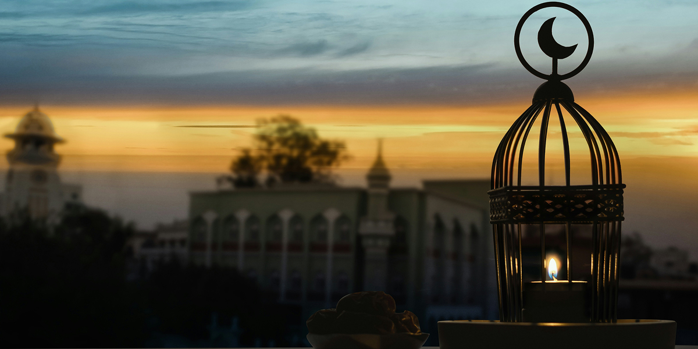

GAMEC Sisters
Empowering Sisters, Strengthening Foundations
The GAMEC Sisters Program is a cornerstone initiative dedicated to empowering women of all backgrounds through Islamic education, social support, and community leadership. Our mission is to provide a dedicated platform where sisters can explore their faith, share their talents, and strengthen the fabric of our global community.

Our Vision: Unity through Diversity
GAMEC serves as a "shadow umbrella," collaborating with all Eritrean Muslim associations to foster a common direction. While our roots are Eritrean, our vision is global. We embrace diversity across all ages, ethnicities, and economic backgrounds. By leveraging technology and cross-border collaboration, we aim to become a leading institution for spiritual growth and civic engagement.
Core Initiatives and Programs
We believe that women are the backbone of society. GAMEC ensures that sisters are not just participants, but leaders in our economic, technological, and social projects.
- Academic & Professional Advancement: We advocate for women to pursue higher education and meaningful careers, balancing Islamic teachings with academic excellence.
- Matrimonial Services: To support the next generation, we offer a Matrimonial Service (available online) to help young men and women meet in a safe, respectful, and Islamic environment.
- Advocacy & Human Rights: Through the GAMEC for the Advancement of Human Rights, sisters can engage locally or online to champion social justice and community transformation.
- Cultural Preservation: We invite sisters to lead in sharing the rich traditions of our heritage — including language, arts, food, and clothing — to ensure our identity thrives in the modern world.
Leadership and Engagement
Women possess a unique resilience and capacity for dialogue. GAMEC is committed to ensuring that women participate as full partners alongside men in every objective we pursue.
How Sisters Can Make an Impact
- Volunteerism: Offer time and talent to drive social justice and community welfare.
- Digital Ambassadorship: Use social media to highlight community issues and expand our reach.
- Innovation: Bring fresh perspectives to the decision-making process, utilizing technology to solve modern challenges.
- Dialogue: Participate in open forums — both in-person and online — to share updates, gather ideas, and address community concerns.
Building a Vibrant Future
Community engagement is what transforms a group into a thriving hub. At GAMEC, we celebrate the individuals and groups who contribute significantly to our progress. By fostering a deep sense of belonging through shared activities, we are building a resilient, cohesive community that transcends physical borders.
Join us today. Whether locally or online, your voice and your vision are essential to our collective success.